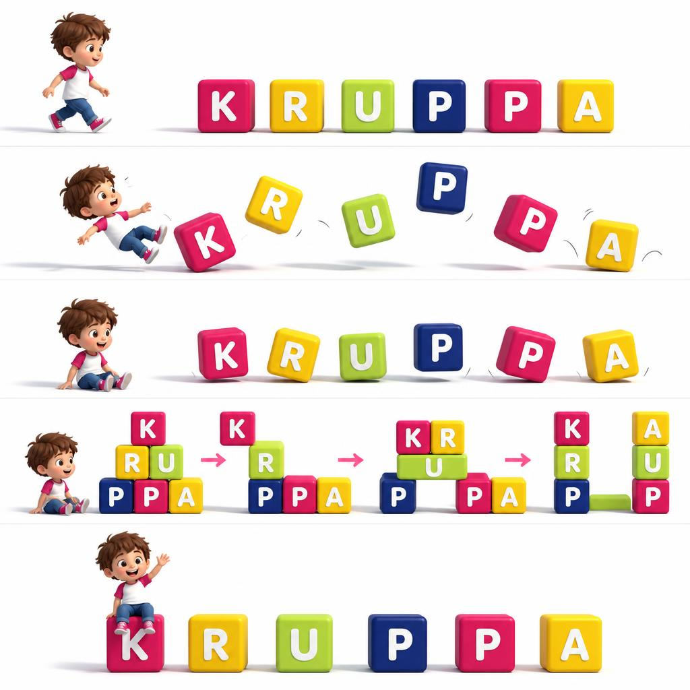

3 meses — 3 anos
Creche
Carinho, rotinas tranquilas e experiências sensoriais para explorar o mundo com segurança.
Fazer pré-candidatura
Centro infantil · Maputo
Um lugar para crescer com carinho, explorar com confiança e aprender fazendo.
Um mundo para construir.

Cada descoberta constrói um novo começo.
Abre a porta ao nosso mundo
As pessoas, os espaços e a alegria de aprender. Vem espreitar.
O nosso vídeo institucional. Carrega para ver, com som e ao teu ritmo.
O Kruppa
Acompanhamos cada descoberta com atenção e respeito pelo ritmo de cada criança. Aqui, as famílias encontram uma comunidade próxima e um ambiente pensado para o bem-estar e a aprendizagem.
Vamos conhecer-nosCrescer connosco
Da primeira descoberta à preparação para a escola.
3 meses — 3 anos
Carinho, rotinas tranquilas e experiências sensoriais para explorar o mundo com segurança.
Fazer pré-candidatura3 — 6 anos
Projectos, brincadeiras e desafios que desenvolvem a autonomia, a criatividade e a cooperação.
Fazer pré-candidaturaA curiosidade abre espaço a novas experiências.
Brincar e fazer ajudam a construir conhecimento.
Escutar e colaborar fazem parte de crescer.
Dia a dia
Música, inglês, natação, movimento, dança criativa e teatro. Novas formas de explorar e de se expressar.
Natação, piano, jiu-jitsu, ballet e inglês individual, para crianças internas e externas.
Equipa multidisciplinar, acompanhamento de enfermagem e refeições orientadas por nutricionista.
Consultar a ementa ↗Visita-nos
Rua Macombe Macossa, 42
Sommerschield, Maputo
Fala connosco
Horário
7h00 — 17h00
Prolongamento até às 17h30